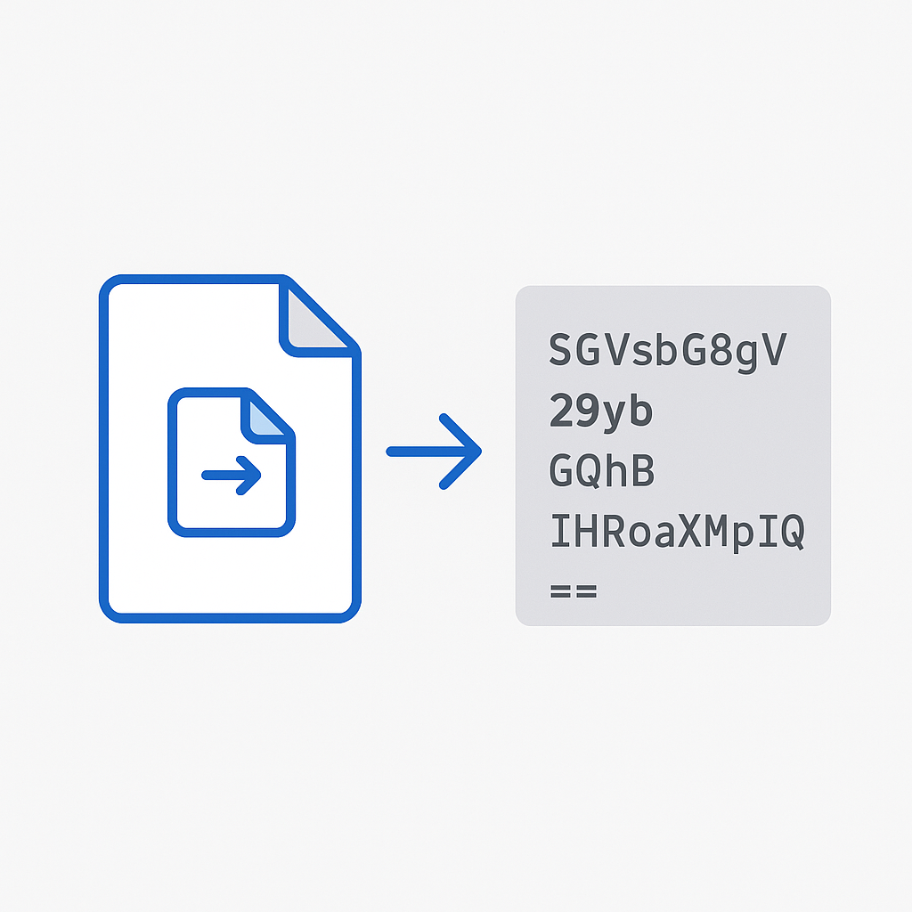

Como usar o Conversor Base64 Online
Entenda o que é Base64, por que ele é usado em sistemas e como converter arquivos em texto seguro
Ler maisArtigos sobre segurança digital, produtividade e ferramentas úteis para o seu dia a dia.
Entenda o que é Base64, por que ele é usado em sistemas e como converter arquivos em texto seguro
Ler maisSaiba os riscos de senhas fracas e descubra como gerar combinações fortes e seguras com nossa ferramenta
Ler maisNeste artigo, você vai entender as diferenças, quando cada documento é usado e como consultar essas informações de forma rápida e prática.
Ler maisSeparamos dicas práticas de segurança digital que qualquer pessoa pode aplicar no dia a dia
Ler maisNa era digital, um dos golpes mais comuns é o phishing. Ele ocorre quando criminosos tentam enganar usuários para roubar informações pessoais, como senhas, números de cartão de crédito ou dados bancários, como se proteger?
Ler mais